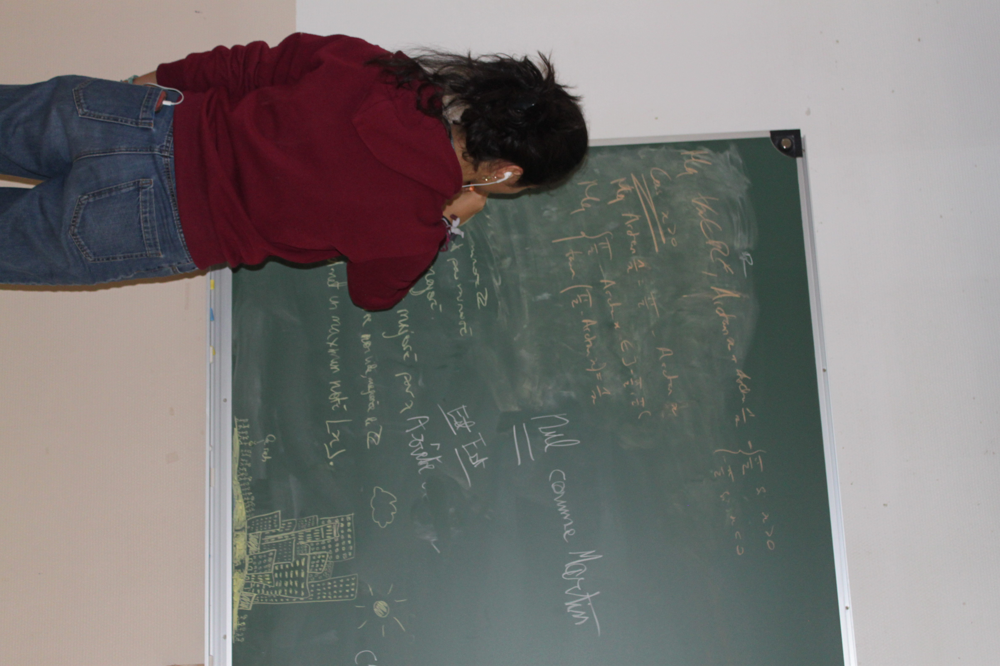
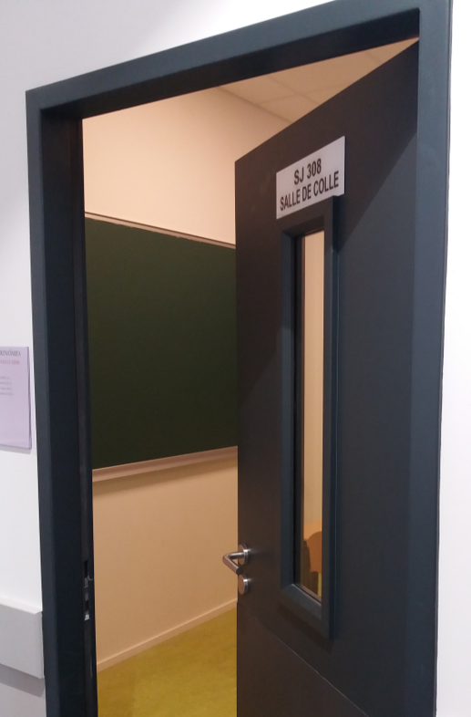
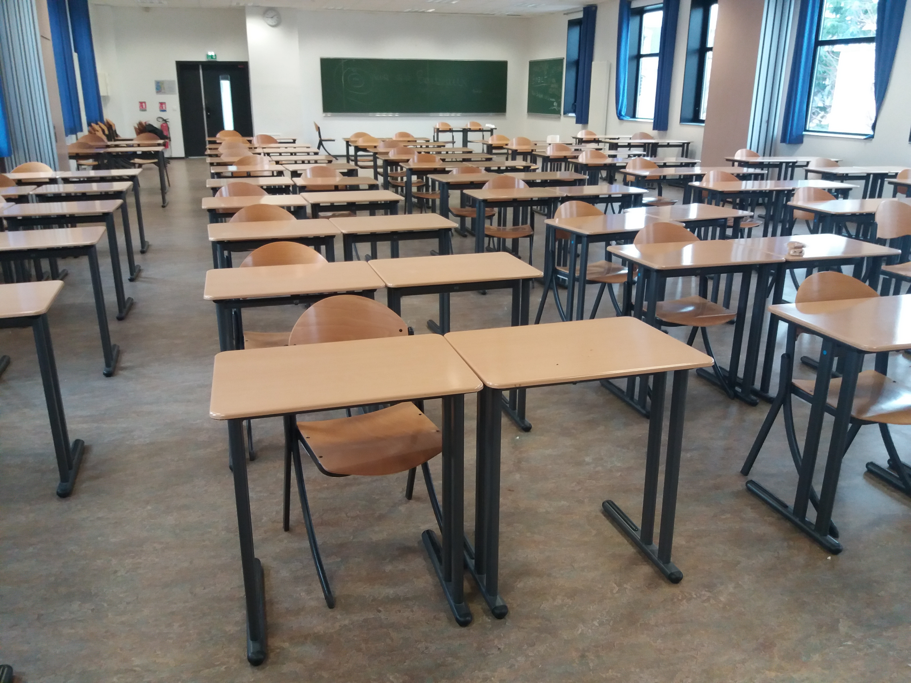
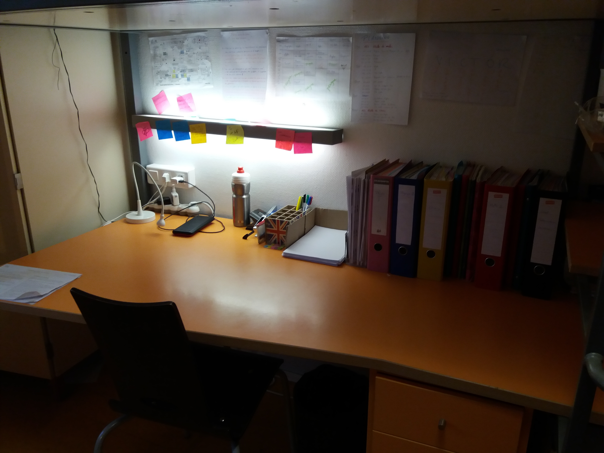
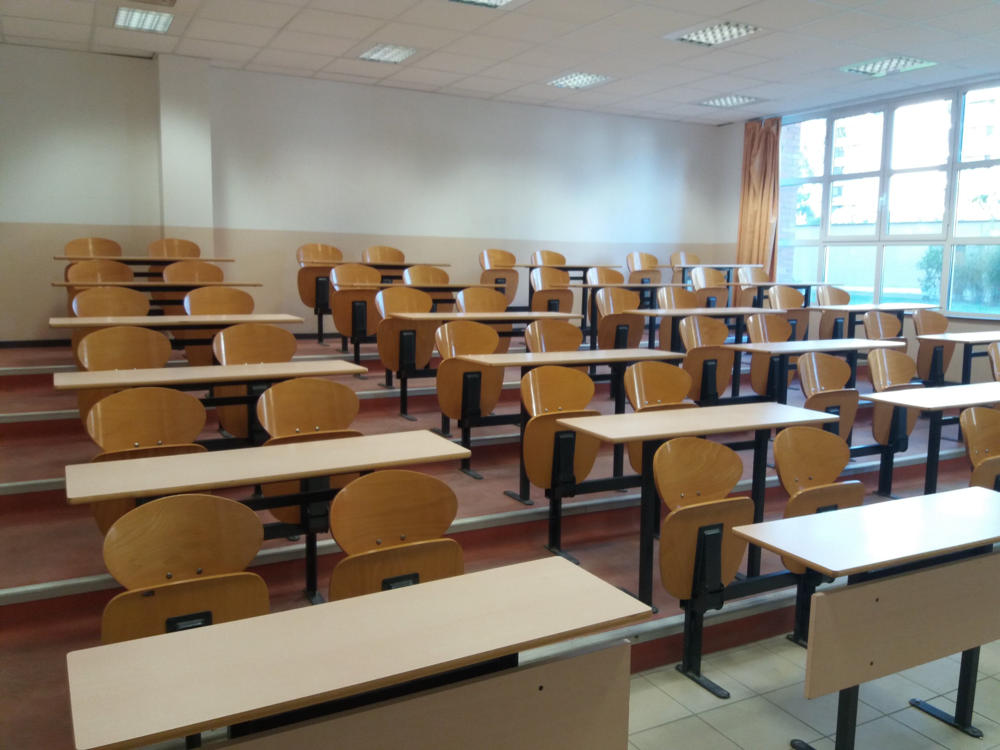

La Pougne en Piston 3
16h de pougne par jour tu ne dépasseras !
Cher visiteur, bonjour,
tu te demandes sûrement ce que le mot "Pougne" signifie.
Ne t'inquiète pas, futur sup, tu le découvriras bien assez tôt.
La Pougne à Ginette, c'est le travail; et du travail, il y en a beaucoup...
L'emploi du temps
Avec ses 35 heures de cours hebdomadaires et son nombre incalculable d'heures de travail personnel, notre emploi du temps remplit pleinement nos journées.
| Lundi | Mardi | Mercredi | Jeudi | Vendredi | Samedi | |
| 8h15-10h15 | Maths | Maths | TD Physique | Maths | Anglais LV1 | Chimie |
| 10h30-12h30 | Physique | TD Maths | TP Chimie | Rabinage | TD Maths | Physique |
| TD Physique | Maths | |||||
| MIDI | ||||||
| 14h-16h | Français | Physique | Sport | Sport en équipe ou Activités Sociales |
SI | Composition (13h30-17h30) |
| Info | TD SI | |||||
| 16h-18h | TP Info | |||||
| 18h-20h | TP SI | |||||
Les matières
+La spécialité de la filière PCSI
Futur Sup, tu hésites sûrement, comme j’ai longtemps hésité, entre la filière MPSI et la filière
PCSI. Je vais donc, plus sérieusement ici, essayer de t’expliquer les avantages de la PCSI
par rapport à la MPSI.
Premièrement, en termes de répartition garçon-fille, il y a pour l’instant 11 filles pour 37
garçons en MPSI alors qu’il y en a 13 pour 30 garçons en PCSI.
Ensuite, en termes d’emploi du temps, là où les MPSI ont 12h de maths et 8h de
physique-chimie, nous avons 10h de maths, 8h de physique et 4h de Chimie. Ainsi tu l’as
remarqué, si tu es en MPSI tu feras très peu de Chimie, alors que si tu es en PCSI, tu en
feras 4h par semaine et tu verras des trucs over plus intéressant. Cela peut t’aider à
choisir, si tu aimes beaucoup la chimie, il vaut mieux partir en PCSI.
Une autre différence entre la MPSI et la PCSI est l’abstraction. Si en PCSI, l’enseignement
est déjà assez abstrait, il le sera encore plus en MPSI puisque tu pousseras les concepts
plus loin en mathématiques et tu auras peu de TP de physique. D’ailleurs, au concours, il n’y
a pas d’examen de TP pour les MPSI. En PCSI, tu auras deux heures de TP de physique,
majoritairement de l’élec et de l’optique, et de nombreux TP de chimie aqueuse et
organique. De plus, la chimie et la physique étant des matières “de bourrin”, pour
progresser, il faut nécessairement apprendre rigoureusement son cours et répéter, répéter
jusqu’à ce que ça rentre ! Les mathématiques ressemblent plus à de la gymnastique, c'est
véritablement un art qui demandera plutôt de l’agilité, et c’est ce qui les rend aussi
passionnant.
A propos de l’ambiance, je ne suis bien sûr pas très objectif, mais j’ai trouvé les autres PCSI
très ouverts et très amicaux. Et si en P3 on a clairement la meilleure ambiance de toute la
BJ, tu trouveras également des gens super dans les autres classes de PCSI et en MPSI.
Les Khôlles
1 heure, 1 tableau, des craies, un prof, deux camarades de classe (et parfois une question colle) voici le résumé de ce que sont
les fameuses colles.
Souvent 2 par semaine (parfois 3 et trop rarement une seule), les colles sont une vraie partie de plaisir pour les élèves
(ou presque).
En PCSI, nous en avons une de maths, de physique, de chimie et d’anglais toutes les deux semaines. À cela s’ajoutent de temps
en temps le français et la SI.
Les horaires, les interrogateurs et les camarades avec lesquels tu passes changent à chaque fois grâce au travail du meilleur
CDT de toute la BJ qui est chargé de l’organisation des colles de la P3.
Mais bon, on ne t’en dit pas trop futur sup car tu découvriras bien vite les rouages de cet exercice…

Les Khôlles

Salle de Khôlles
Les Pâles
Les pâles, ou les DS si tu préfères sont vraiment la cerise sur le gâteau pour clôturer une
semaine de travail. Tous les samedis de 13h30 (14h30 si ta classe a fait du grabuge) jusqu’à
17h30, tu auras l’occasion de plancher sur un devoir de 4h de maths, de physique, de
chimie, de français ou d’anglais pour voir si tu as bien intégré les notions apprises, et pour
t’entraîner et te préparer à … l’intégration !!!
Et juste après, c’est SAMEDI SOIR (un moment spécial à la BJ !... Mais ça, futur-Sup, tu le découvriras bien assez tôt...)

Salle de Pâles
Le Travail Personnel
Regarde bien les cases vides dans notre emploi du temps cher sup : Regarde les bien et essaye d’imaginer …
Prend deux de ces cases et remplit les avec deux heures de colle. Prends le jeudi après-midi que tu rempliras avec des activités
extra-scolaires, le samedi après-midi occupé par la pâle et le samedi soir où il est formellement, physiquement et moralement
interdit de travailler. Garde peut-être deux autres heures pour discuter avec tes potes, faire du sport et de la musique,
passer au Carrefour (alias le Champial) pour faire quelques courses. Ça va tu as réussi à suivre ? Et bien il te reste encore
une vingtaine d’heure à occuper, sans compter le midi et le dimanche. Devine comment tu vas occuper toutes ces cases ? Eh bien
en travaillant mon coco, et oui ! On est là pour ça après tout, et tu vas vite t’apercevoir que tu aimerais bien en avoir deux
fois plus du temps de travail perso, pour pouvoir faire tout ce que tu as à accomplir.
A Ginette, le temps est la plus précieuse des ressources, tu l’apprendras de ton préfet, tu l’apprendras des spés,
tu l’apprendras de l’expérience. Alors tu verras que les maîtres mots ici sont : organisation et concentration, priorisation
et optimisation. A coup de plannings, d’entraînements, de détermination et de soutien mutuel avec tes cos, tu développeras des
capacités que tu ne pensais pas possible d’avoir et tu apprendras à travailler vite, efficacement et agréablement.

Notre bureau perso

Notre salle de classe
Les trînomes de travail
Les trinômes de travail sont une des spécificités de Ginette. Une fois par semaine, tu auras l’occasion de travailler avec ton trinôme (un groupe de trois personnes, constitué par ton CDT préféré, qui n’ont rien à voir ni avec ton piaulage, ni avec tes groupes de colle) dans une salle réservée. Cela permettra de travailler, de progresser, de chercher et d’apprendre ensemble. Car Ginette, ce n’est pas seulement l’excellence académique, c’est aussi l’esprit-co, et la progression, ensemble !